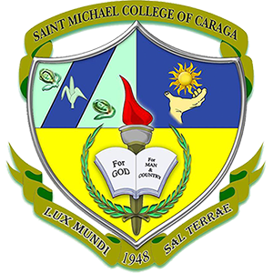

VISION
Saint Michael College of Caraga envisions to be a university by 2035 and upholds spiritual formation and excellence in teaching, service, and research.
MISSION
- SMCC shall provide spiritual formation and learning culture that will ensure the students with excellent and rewarding learning experience that transform lives, abound spirituality, develop skills and prepare future leaders;
- SMCC shall engage to dynamic, innovative, and interdisciplinary researches that are publishable to advance and achieve institutional initiatives; and
- SMCC shall commit to serve the diverse and local communities in fostering innovations through service-learning that enhances reciprocal community partnerships for spiritual and social development.
GOAL
- Uphold Culture of Excellence in the Areas of Spiritual Formation, Instruction, Research, and Extension, thus Produce Graduates that are Globally Competent, Spiritually Embodied, and Socially Responsible.
GENERAL OBJECTIVES
- To integrate positive and evangelical values in all areas and design Christian formation programs that are effective and responsive to the psychospiritual needs of the students, pupils, parents, and personnel. To continuously enhance the curriculum and upgrade teachers’ professional, emotional, spiritual growth, and quality of instruction.
- To continue upgrading facilities and services for the satisfaction of the clientele.
- To intensify the curriculum-based and institutional researches that are dynamic, innovative, and interdisciplinary
- To implement programs that help educate, motivate, and inspire to assume an active role and become socially responsible stewards of God’s creation.
- To provide the best student services catering physical, mental, emotional, spiritual, socio-cultural needs of the students.
- To establish harmonious linkages with the Alumni, PTA, LGU, and other stakeholders to gain support for the school development plans.
- To work for Accreditation by any recognized accrediting agency.
MICHAELINIAN IDENTITY
- S – ocially Responsible for the respect, care, love and development of God’s creations as such at all times demonstrate and live-out their social responsibilities;
- M – issionaries of Christian Values, possessing a faith that is dynamic to imbibe and to proclaim and promote the Christian values, hence, sharing in the mission of Christ and of the Catholic church to make all people members of one sheepfold of God;
- C – ommitted Indivuduals and/or Leaders, likened to the faithful commitment of Jesus to His Father, thus, upholding unconditional commitment to value-filled life and actions of love and mercy;
- C – ompetent in their Chosen Field of Endeavors, performing with in-depth confidence as they exude in competence in the performance of their chosen field of endeavors.
- Therefore, Michaelinians have the identities of Social Responsibility, Missionaries of Christian Values, Committed Individuals and/or Leaders, and Competent in their Chosen Field of Endeavors, which are paramount to transform people to be person-oriented, persons of values, persons of faith and love for God, and persons of love and mercy for others.
BACHELOR'S PROGRAMS OFFERED AT SMCC NASIPIT
Teacher Education
- Bachelor of Elementary Education
- Bachelor of Secondary Education
- English
- Mathematics
- Science
Tourism, Hospitality & Culinary
- BS in Hotel and Restaurant Management
- BS in Tourism Management
IT, Computer Science & Programming
- BS in Computer Science
- BS in Information Technology
Language
- AB in English
Social Science
- AB in Political Science
- BS in Criminology
Business
- BS in Business Administration
Admission & Scholarship Services
ADMISSION REQUIREMENTS
1. Preschool (New)
- Age Requirement
- Photocopy of the Authenticated PSA Birth Certificate
- Two (2) pcs. 2x2 colored picture
- Interview with the Principal
- Marriage Contract of the Parents (optional)
2. Grade 1
- Age Requirement
- Photocopy of the Authenticated PSA Birth Certificate
- Form 138 (Report Card Preschool Education)
- Two (2) pcs. 2x2 colored picture
- Marriage Contract of the Parents (optional)
- Passed the Reading Test
- Certificate of Completion (Photocopy)
3. Returning Pupils / Students
- Final Examination Permit / Clearance
- Form 138
4. High School
- Photocopy of the Authenticated PSA Birth Certificate
5. College First Year Students except BSED and BEED Programs
- Form 138 (Report Card)
- Photocopy of the Authenticated PSA Birth Certificate
- Two (2) pcs. 2x2 colored picture
- 1 long brown size envelope
- 1 long cellophane envelope
- Good Moral Certification from the Principal
- Passed the Reading and Multiplication Table Tests
- NCAE Result
- Marriage Contract (if married)
- Photocopy of PWD ID from DSWD (if PWD)
- Photocopy of any proof if 4Ps/Listahan 2.0 member or Household Number
- Certificate of Residency (if resident from Nasipit)
6. College First Year BSED and BEED Students
- Form 138 (Report Card) with General Average of 85%
- Photocopy of the Authenticated PSA Birth Certificate
- Two (2) pcs. 2x2 colored picture
- 1 long brown size envelope
- 1 long cellophane envelope
- Good Moral Certification from the Principal
- Passed the Reading and Multiplication Table Tests
- Student Aptitude Test for Teachers (SATT) score of not less than 167
- IQ Test (OLSAT) score of not less than 31
- NCAE Result
- Marriage Contract (if married)
- Photocopy of any proof if 4Ps/Listahan 2.0 member or Household Number
- Certificate of Residency (if resident from Nasipit)
7. Basic Education Transferees
- Passed the Entrance Examination (written and oral)
- Form 138
- Photocopy of the Authenticated PSA Birth Certificate
- Certificate of Good Moral Character
- Two (2) pcs. 2x2 colored picture
- Interview with the Principal
- Marriage Contract of the Parents (optional)
- Passed the Reading and Multiplication Table Tests
8. College Transferees (non-educational programs and TESDA Programs except Seafarer)
- Honorable Dismissal
- Transcript of Records
- Photocopy of the Authenticated PSA Birth Certificate
- Passed the Reading and Multiplication Table Test
- Two (2) pcs. 2x2 latest colored picture
- 1 long brown sized envelope
- 1 long cellophane envelope
- Good Moral Certification
- arriage Contract (if married)
- Photocopy of PWD ID from DSWD (if PWD)
- Photocopy of any proof if 4Ps/Listahan 2.0 member or Household Number
- Certificate of Residency (if resident from Nasipit)
9. College Transferees (BSED and BEED Programs)
- Honorable Dismissal
- Transcript of Records General Average of 85%
- Photocopy of the Authenticated PSA Birth Certificate
- Passed the Reading and Multiplication Table Tests
- Two (2) pcs. 2x2 colored picture
- 1 long brown size envelope
- 1 long cellophane envelope
- Good Moral Certification
- Marriage Contract (if married)
- Photocopy of PWD ID from DSWD (if PWD)
- Photocopy of any proof if 4Ps/Listahan 2.0 member or Household Number
- Certificate of Residency (if resident from Nasipit)
10. Seafarer
- Form 138 (Report Card)
- Photocopy of the Authenticated PSA Birth Certificate
- Must be 18 Years Old on or before the date of completion
- Two (2) pcs. 2x2 colored picture
- 1 long brown size envelope
- 1 long cellophane envelope
- Good Moral Certification from the Principal
- Passed the Reading and Multiplication Table Tests
- NCAE Result
- Marriage Contract (if married)
Atupan St. Brgy. 4, Nasipit, Agusan del Norte Mindanao, Philippines 8602
-

- (085) 300 2932
- 8:00 am - 5:00 pm